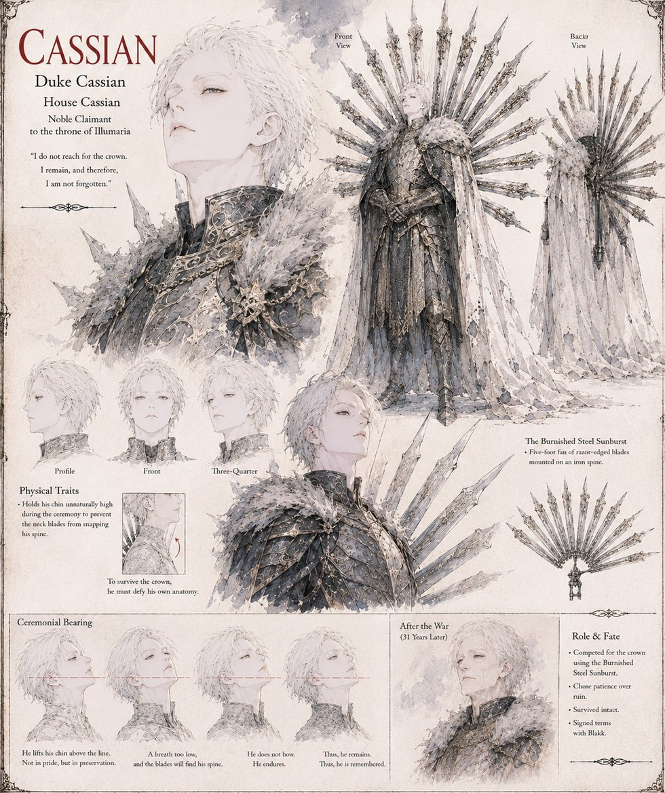

Cassian
Duke Cassian, House Cassian · Noble Claimant to the throne of Illumaria
Duke Cassian comes last and lightest to the Great Judgment: a five-foot Burnished Steel Sunburst of razor blades on a spine no thicker than a finger, engineered with real rigor for reflection and none at all for a grown man's neck, so that he holds his chin unnaturally high through the whole ceremony — arithmetic, not vanity, since any deeper bow was likely to snap his own spine for him. He reads Blakk's letter of surrender twice and does nothing, trusting no one but concluding, correctly, that a war against a man who has already surrendered is a war fought for nothing; he holds his own forces two days' march from the Standing at Illmere Ford for the whole engagement and arrives on the fifth day to find no one left worth conquering.
He proposes terms, retires within the fortnight, and spends the remaining thirty-one years of his life keeping a private ledger he calls the Cost of Not Winning — tallying, year on year, everything a crown might once have been worth against a column he never lets himself total in full. He turns down a coalition's offer to back his own claim without ever mentioning it to anyone, including Blakk, and dies in his own bed having proven, to his own satisfaction only, that a kingdom which asks nothing of him balances its books better than one he ruled.
“A kingdom that costs a man nothing to leave alone is a kingdom he has already, whether he meant to or not, chosen to keep.”